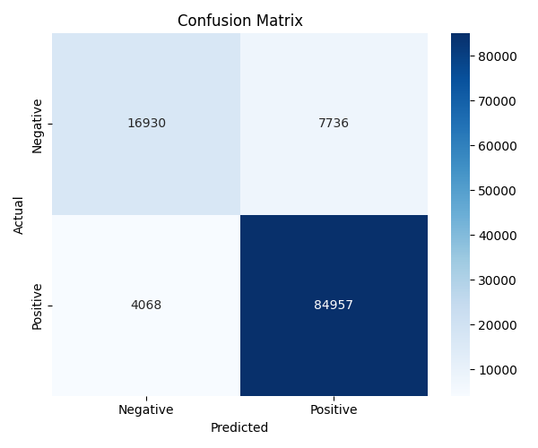

As a data scientist, I want to analyze the Amazon Fine Food Reviews dataset using descriptive, predictive, prescriptive, and advanced NLP technique (Ollama), so that I can gain actionable insights into product reviews, predict customer sentiment and suggest personalized product recommendations to improve the overall user experience and product offerings on Amazon.
1. Descriptive analysis
2. Predictive analysis

3. Prescriptive analysis
Logistic regression for binary classification of sentiment of reviews.